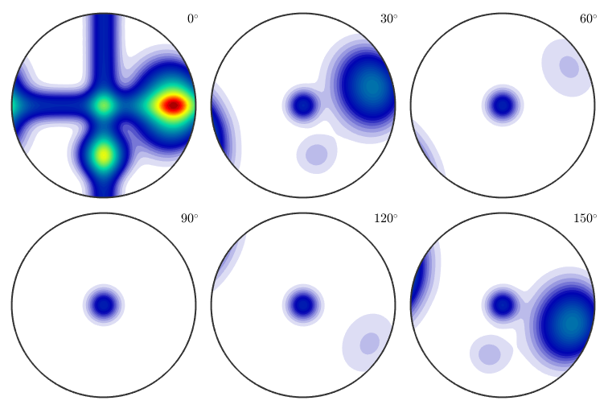
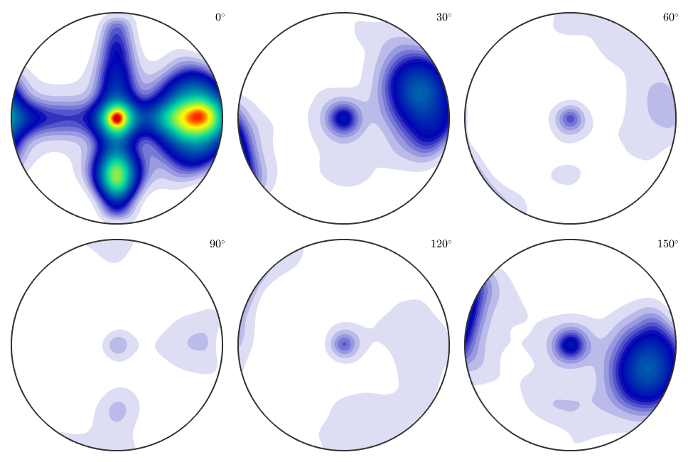
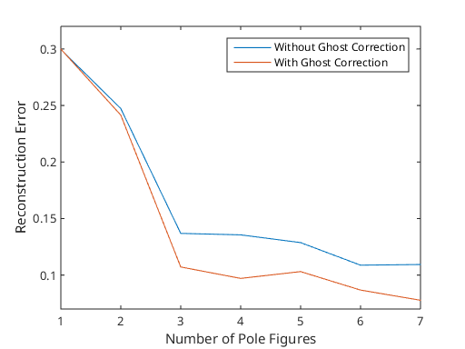

Simulating Pole Figure data
Simulate arbitary pole figure data
| On this page ... |
| Introduction |
| Simulate Pole Figure Data |
| ODF Estimation from Pole Figure Data |
| Exploration of the relationship between estimation error and number of single orientations |
Introduction
MTEX allows to to simulate an arbitary number of pole figure data from any ODF. This is quit helpfull if you want to analyse the pole figure to ODF estimation routine. Let us start with a model ODF given as the superposition of 6 components.
cs = crystalSymmetry('orthorhombic'); mod1 = orientation('axis',xvector,'angle',45*degree,cs); mod2 = orientation('axis',yvector,'angle',65*degree,cs); model_odf = 0.5*uniformODF(cs) + ... 0.05*fibreODF(Miller(1,0,0,cs),xvector,'halfwidth',10*degree) + ... 0.05*fibreODF(Miller(0,1,0,cs),yvector,'halfwidth',10*degree) + ... 0.05*fibreODF(Miller(0,0,1,cs),zvector,'halfwidth',10*degree) + ... 0.05*unimodalODF(mod1,'halfwidth',15*degree) + ... 0.3*unimodalODF(mod2,'halfwidth',25*degree);
plot(model_odf,'sections',6,'silent','sigma')
Simulate Pole Figure Data
In order to simulate pole figure data the following parameters has to be specified
- an arbitrary ODF
- a list of Miller indece
- a grid of specimen directions
- superposition coefficients (optional)
- the magnitude of error (optional)
The list of Miller indece
h = [Miller(1,1,1,cs),Miller(1,1,0,cs),Miller(1,0,1,cs),Miller(0,1,1,cs),...
Miller(1,0,0,cs),Miller(0,1,0,cs),Miller(0,0,1,cs)];The grid of specimen directions
r = regularS2Grid('resolution',5*degree);Now the pole figures can be simulated using the command calcPoleFigure.
pf = calcPoleFigure(model_odf,h,r)
pf = PoleFigure crystal symmetry : mmm specimen symmetry: 1 h = (111), r = 72 x 37 points h = (110), r = 72 x 37 points h = (101), r = 72 x 37 points h = (011), r = 72 x 37 points h = (100), r = 72 x 37 points h = (010), r = 72 x 37 points h = (001), r = 72 x 37 points
Add some noise to the data. Here assume that the mean intensity is 1000.
pf = noisepf(pf,1000);
Plot the simulated pole figures.
plot(pf)

ODF Estimation from Pole Figure Data
From these simulated pole figures we can now estimate an ODF,
odf = calcODF(pf)
initialize solver
start iteration
error: 2.0841E-01 1.5936E-02 4.4882E-03 2.4285E-03 1.6022E-03 1.2539E-03 1.0393E-03 9.2564E-04 8.5230E-04 8.0499E-04 7.7243E-04
Finished PDF-ODF inversion.
error: 7.7243E-04
alpha: 1.0000E+03 9.9993E+02 9.9873E+02 1.0026E+03 9.9617E+02 1.0018E+03 1.0053E+03
initialize solver
start iteration
error: 4.8904E-01 1.7045E-01 3.3665E-02 1.4235E-02 9.5249E-03 6.9278E-03 5.7294E-03 4.9323E-03 4.3588E-03 3.8873E-03 3.5359E-03
Finished PDF-ODF inversion.
error: 3.5359E-03
alpha: 9.9305E+02 9.9008E+02 1.0052E+03 9.9798E+02 1.0112E+03 1.0213E+03 1.0222E+03
odf = ODF
crystal symmetry : 222
specimen symmetry: 1
Uniform portion:
weight: 0.46418
Radially symmetric portion:
kernel: de la Vallee Poussin, halfwidth 5°
center: 29772 orientations, resolution: 5°
weight: 0.53582
which can be plotted,
plot(odf,'sections',6,'silent','sigma')
and compared to the original model ODF.
calcError(odf,model_odf,'resolution',5*degree)ans =
0.0737
Exploration of the relationship between estimation error and number of single orientations
For a more systematic analysis of the estimation error we vary the number of pole figures used for ODF estimation from 1 to 7 and calculate for any number of pole figures the approximation error. Furthermore, we also apply ghost correction and compare the approximation error to the previous reconstructions.
e = []; for i = 1:pf.numPF odf = calcODF(pf({1:i}),'silent','NoGhostCorrection'); e(i,1) = calcError(odf,model_odf,'resolution',2.5*degree); odf = calcODF(pf({1:i}),'silent'); e(i,2) = calcError(odf,model_odf,'resolution',2.5*degree); end
Plot the error in dependency of the number of single orientations.
close all; plot(1:pf.numPF,e) ylim([0.07 0.32]) xlabel('Number of Pole Figures'); ylabel('Reconstruction Error'); legend({'Without Ghost Correction','With Ghost Correction'});
| DocHelp 0.1 beta |